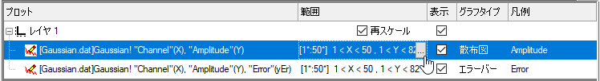

プロットの表示範囲を編集する
PlotSetup-EditDisplayRange
マスク機能を使用せずに、またワークシート表示範囲を変えずに、データプロットの表示範囲を変更することができます。同じワークシートデータを別のグラフに作図する場合に特に有効です。プロット表示範囲のみを変更することで、関心のある領域だけにすることができます。
プロットの表示範囲を変更するには、3通りの方法があります。作図のセットアップダイアログ、レイヤ内容ダイアログ、グラフのコンテキストメニューの3つです。1つ以上のプロットを含むグラフウィンドウを作成し、そのプロットに対して表示範囲を変更するものとします。
作図のセットアップでのグラフ表示範囲
- グラフウィンドウの左上のレイヤnアイコンを、Alt+ダブルクリックします。これにより、作図のセットアップダイアログが開きます。
- ボタンで3つのパネルを全て開きます。
- 上段パネルでグラフの元となるワークシートを選択して反転表示します。
- 下段パネルの範囲列の下に表示されているデータプロットの右側をクリックします(図を表示)。この時に作成されるボタンをクリックすると、「範囲」ダイアログボックスが開きます。
- 
- 「自動」チェックボックスを外し(選択されていた場合)、必要に応じて、「開始」、「終了」の値を編集します。
- OKをクリックします。(「範囲」ダイアログボックス内で)
- 必要に応じて各プロットの範囲を編集します。
- プロット表示へ変更を行う際にグラフ軸の再スケールを行いたくない場合、「範囲」列の「再スケール」チェックボックスのチェックを外します。
- OKをクリックします。プロットは新たに指定した表示範囲で再描画されます。『再スケール』チェックボックスを選択していた場合、プロット範囲に加えた変更を反映して軸が再スケールされます。
| Note: プロットの範囲を変更した後、このプロットを右クリックして、「範囲をグループに適用、範囲をレイヤに適用」、「範囲をページに適用」を選択することで、同じグループ/レイヤ/ページの別のプロットにも範囲を適用することができます。
|
レイヤ内容でのグラフ表示範囲
- グラフがアクティブな状態で、グラフ左上角のレイヤアイコンを右クリックします。
- メニューからレイヤ内容を選択します。
- レイヤアイコンを右クリックし、コンテキストメニューからレイヤ内容を選択します。
- 右側パネルのレイヤ内容リストボックスでは、範囲列でボタンをクリックして範囲ダイアログを開きます。範囲が含まれていない場合、このリストの列ヘッダ範囲を右クリックしてコンテキストメニューを開いてから範囲を確認します。
- この後の範囲設定手順は作図のセットアップでの表示範囲セッションのステップ5から9と同じになります。

コンテキストメニューからのグラフ表示範囲
- グラフをアクティブにして、目的のプロットをクリックして選択して右クリックし、コンテキストメニューから領域の編集を選択します。すると、範囲ダイアログボックスが開きます。
- Xの範囲（Xは単調でなければなりません）または行番号の範囲をクリックして、自動のチェックを外してから必要に応じて開始と終了に値を入力します。適用ボタンをクリックして変更されたことを確認したら、OKをクリックしてダイアログを閉じます。
 | デフォルトでは、レイヤ内の単一プロットの表示範囲を編集します。しかし、表示範囲編集の前にアクティブグラフレイヤで layer.commonrange=1を設定すると、単一プロットの範囲を編集することで、レイヤ内のすべてのプロットで共通の表示範囲として設定できます。
|
3Dグラフのグラフ表示範囲
3Dグラフ上で右クリックして、領域の編集を選択します。
- 行列または仮想行列: X、Yが双方 単調な場合、値により範囲を編集できます。そうでない場合、行番号による範囲編集に限られます（行番号の範囲）。
-
- XYZデータ: Xが単調な場合、Xの範囲で編集でき、Yが単調な場合は、Yの範囲で編集できます。 そうでない場合、行番号による範囲編集に限られます（行番号の範囲）。
-
- XYYデータ: Xが単調な場合、Xの範囲で編集できます。そうでない場合、行番号による範囲編集に限られます（行番号の範囲）。
-